GSKY interacts with ArcGIS suite¶
This tutorial demonstrate how ArcGIS pro, ArcGIS Earth and ArcMap interact with GSKY Web Mapping Services (WMS). In this tutorial, you will learn to add the layer by calling GSKY WMS server.
Introduction¶
ArcGIS
https://learn.arcgis.com/en/projects/get-started-with-arcgis-online/
In this tutorial, we are going to demonstrate
- Create a map showing evacuation routes in Houston
- Use smart mapping and pop-ups to determine areas with low vehicle ownership.
- Configure a web app to share your findings with others.
0. Prerequisite¶
In this lesson, you’ll create a map that shows hurricane evacuation routes in Houston, Texas. First, you’ll create a new map and locate Houston, Texas. Then, you’ll add a map layer that shows evacuation routes. Lastly, you’ll change the way your map and layers look to better display the data.
If you don’t have an ArcGIS account, you can sign up for a free public account or an ArcGIS free trial.
1. Sign in using google account¶
Type this link in your web browser: https://www.arcgis.com/home/createaccount.html
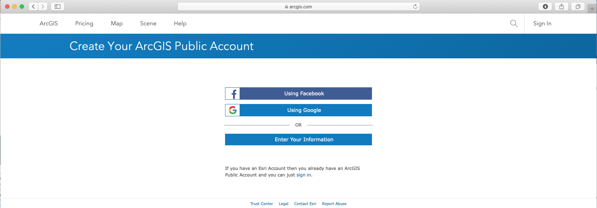Click “Using Google” to login. You might need to click twice to login.

You might need to click twice to login.
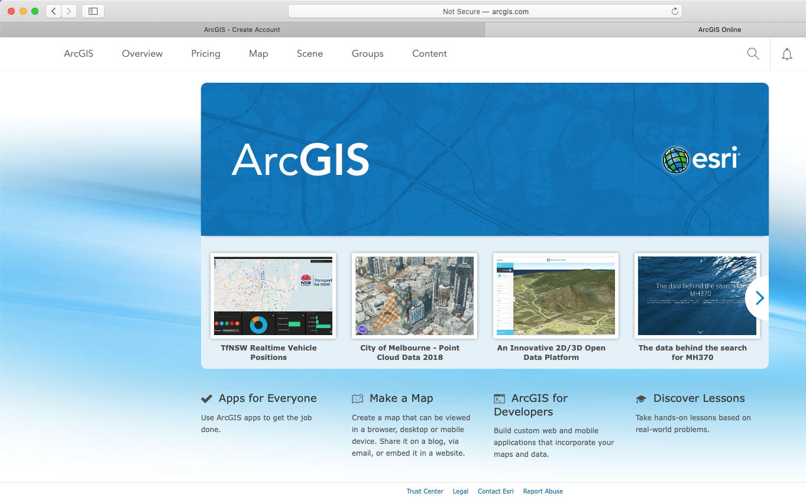2. Choose a Basemap¶
Click “Map” on the top bar. You will see a map with the dafault location.
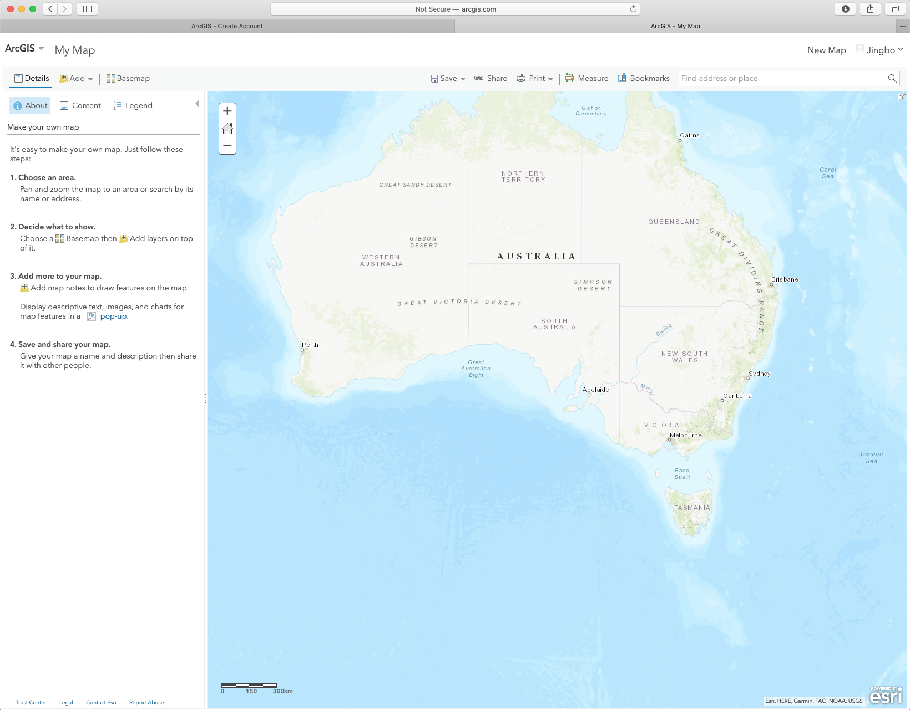Choose “Terrain with Labels” as the Basemap from the list.
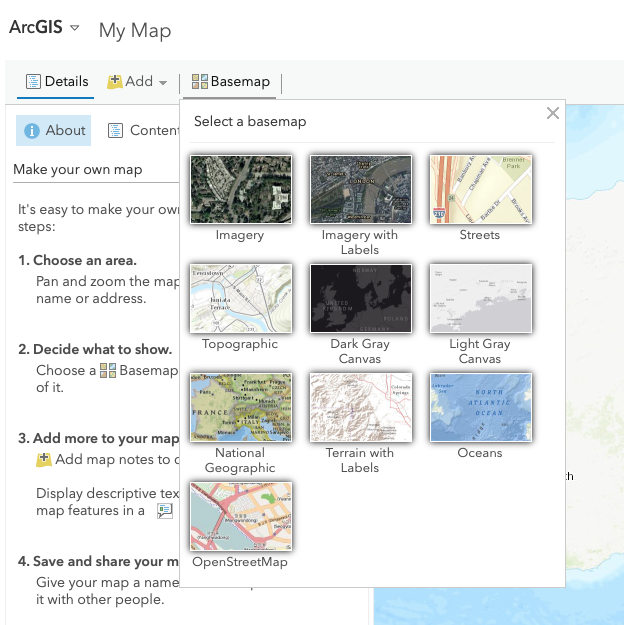Type the location in the search window on the right-top corner and click enter. Dismiss the “Search result” box. We will just use the default view or search “Australia” if the default view is not Australia.

3. Load GSKY layer onto a map¶
Click “Add | Add Layer from Web”.

You will see a list of options from the drop down box below. Choose “A WMS OGC Web Service”.

Type is “https://gsky.nci.org.au/ows/geoglam” in the URL box. Then click “ADD LAYER”. You can tick the box beneath of URL box “Use as Basemap” if you like.

All data layers published through GSKY production server should be now available for you to choose. Click the grey arrow to expend the dataset list. Note if you untick the top layer “GSKY Web Map Service”, all the GSKY layers will be invisible.

You can tick/untick the layer as you like.

You can change the layer’s appearance for each layer. Put mouse on top of the “…” under each layer, a list of options will pop up as below. For example, you can increase the Transparency by moving the percentage bar. You can use this layer as the Basemap by clicking “Move to Basemap”. You can also remove the layer by choosing “Remove” option.

4. Add Oil and Gas pipeline data¶
Click “Add | Browse Living Atlas Layers”.

Search “Australia” to see what database is available in this Living Atlas. Two layers are found: Oil and Gas Infrastrcutre and DEM SREM 1 Second Hydro Enforced.

Choose “Oil_Gas_Infrastructure” and click “Add layer”.
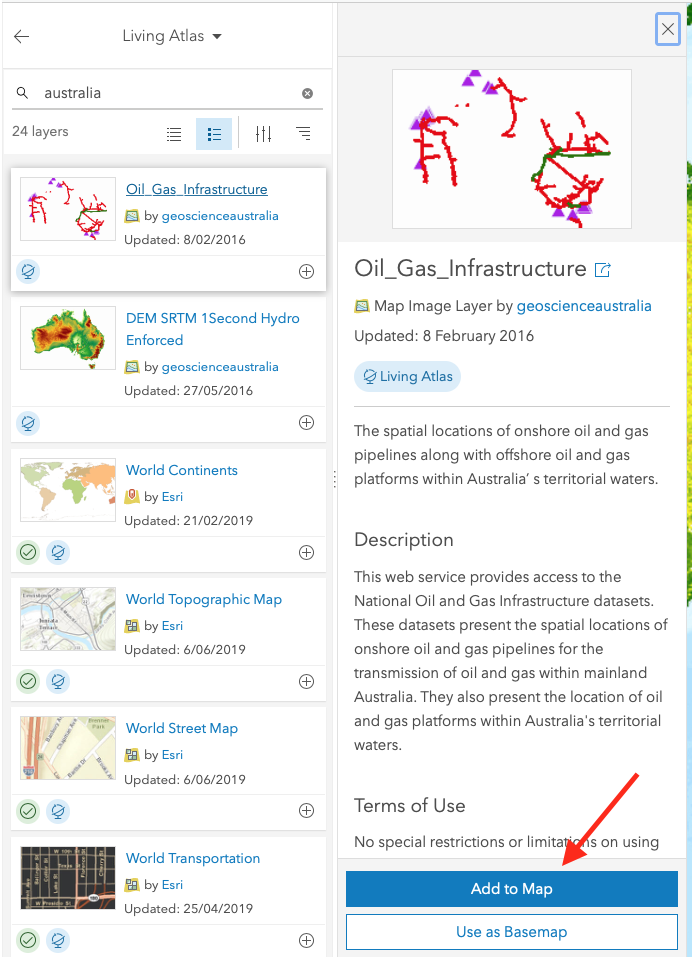Close the layer information (step 1 in red circle) and go back to the map view (step 2 in red circle)
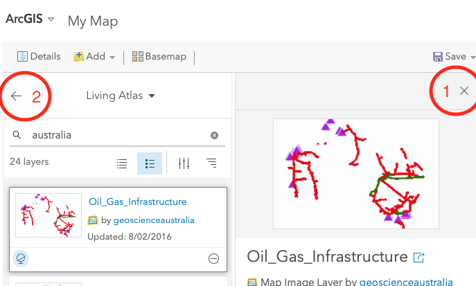Two layers are shown on the map.

Drag and move to re-arrange the order of different layers.
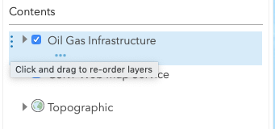Click “Details | Contents | Layer name | Transparency” to see through this layer.
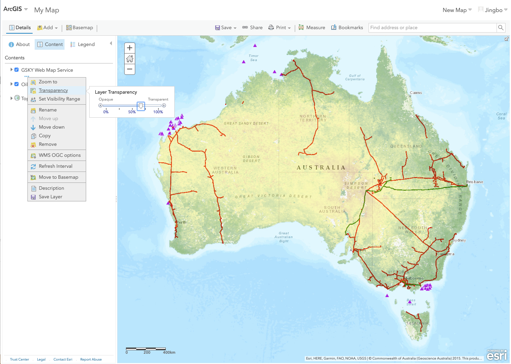5. View attribute table¶
Click “Details | Content | Layer name (National Onshore Oil Pipelines) | Show Table” (click the table icon).

Move the bar up to expand the table view.
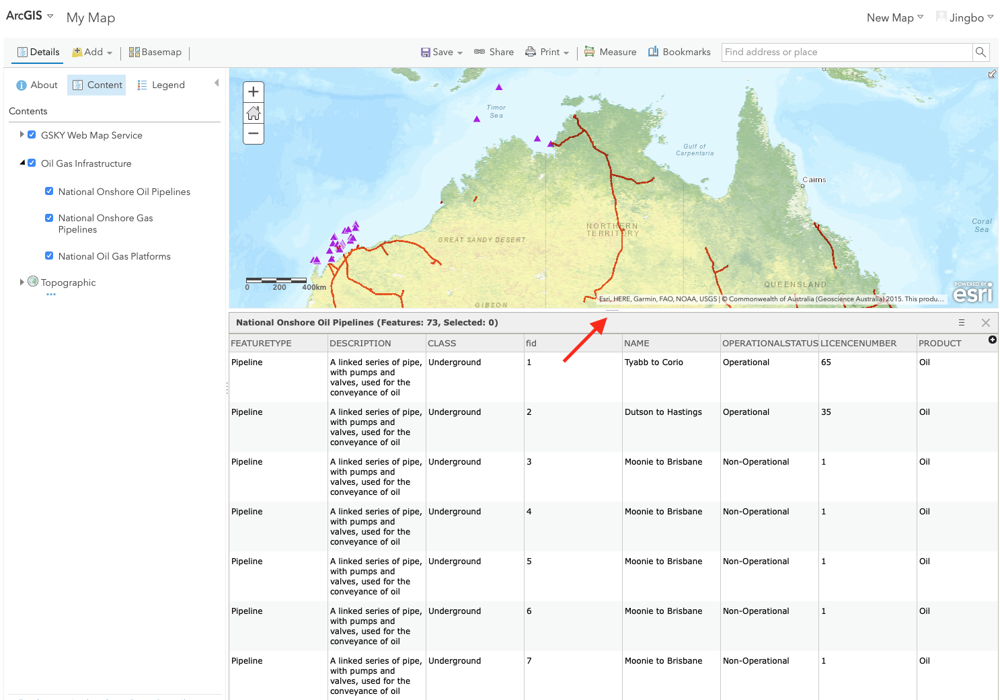Select the records that are interested. Click “Show Selected Records”.
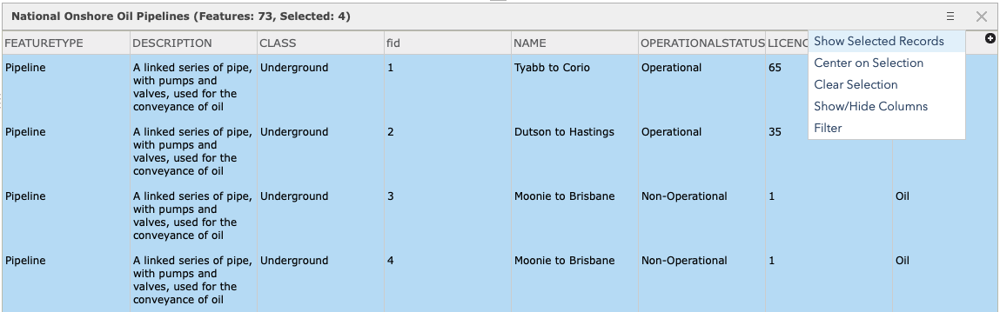The four selected records are highlighted on map.
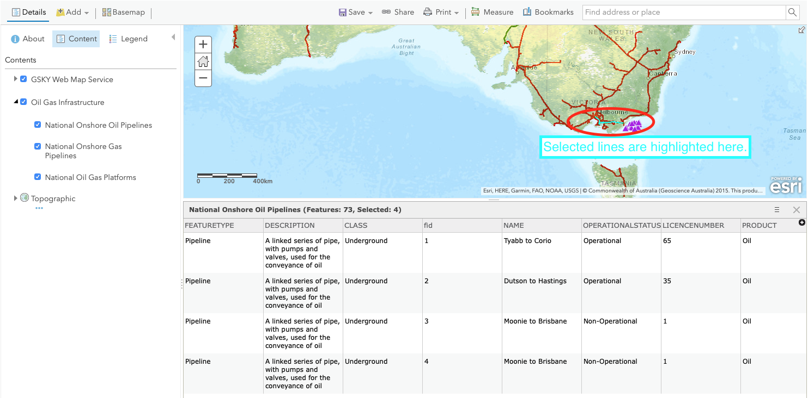6. Style the layer with attribute¶
Click “Details | Contents | Layer name | Change style”.
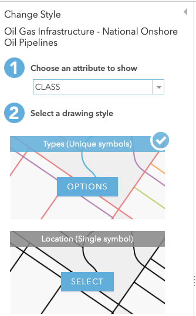Choose an attribute to show - Operational status. Click “Option”.

Click the colour line to change the styles.

Select thick black solid line for operational lines.

Select thick grey dash line for non-operational lines.
 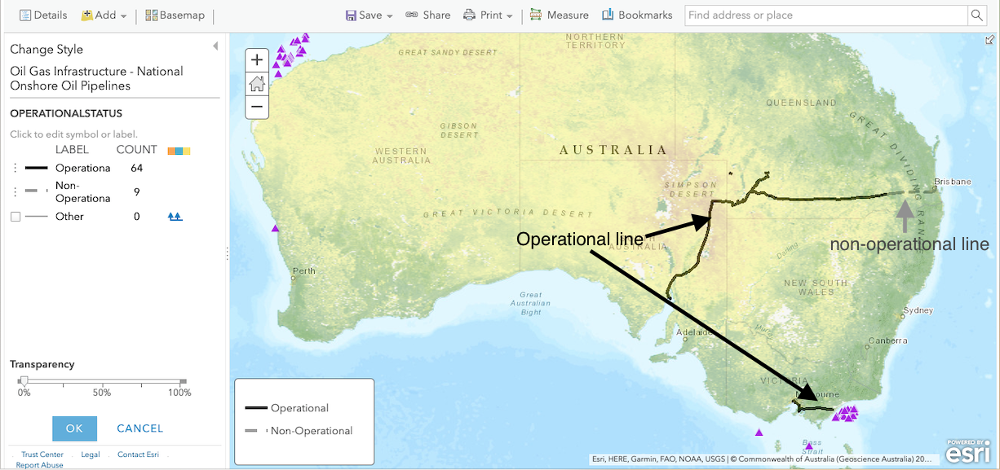
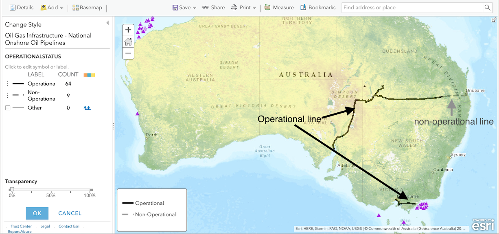
7. Enable and customise the Pop-up¶
Click “Details | Contents | Layer name (National Onshore Oil Pipelines) | More Options”.

Click “Enable Pop-up”.

Click on a tract to see the pop-up.
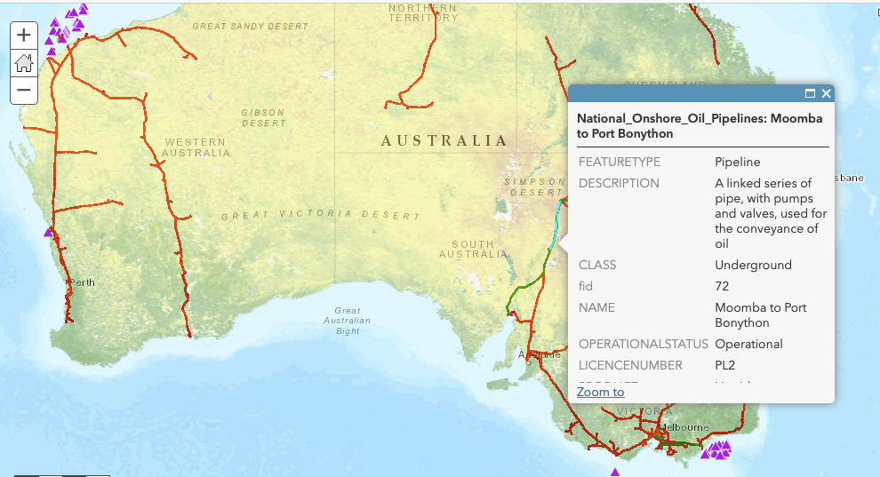Click “Details | Contents | Layer name (National Onshore Oil Pipelines) | More Options | Configure Pop-up”.

Choose “A description from one field” to display as pop-up content.

Click on a tract to see the pop-up.
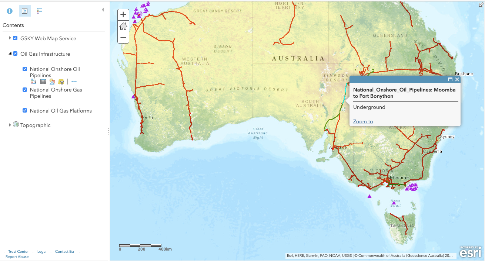8. Save the map and create a web app to share¶
Click “Save”.

Type the map name and tags. Click “Save maps”.

Click “Share”.

Click “Create a web app”. The link to the map will automatically pop up.

Choose a template.

Click “Create web app”.
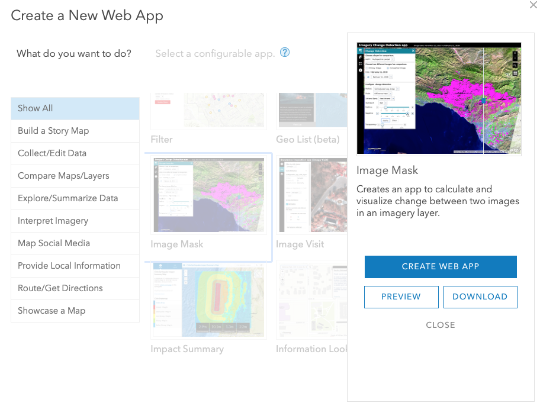Enter title, summary. Click “Done” and wait until map is generated.

Click “Save”. Click “Launch”. Copy the URL for sharing.